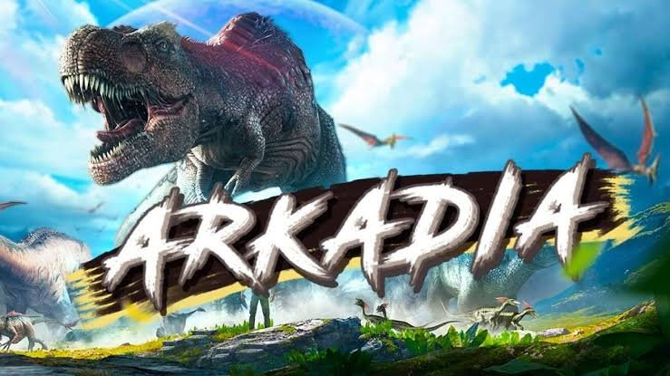
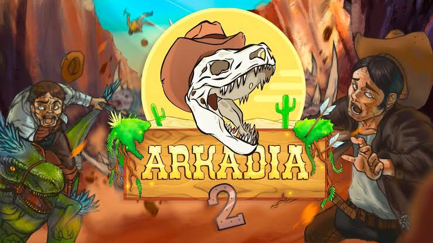
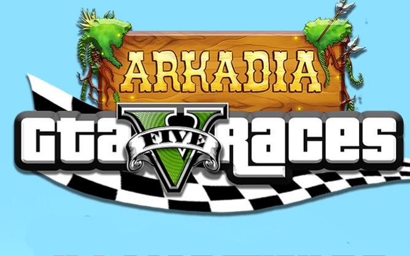

¿Qué es arkadia?
Arkadia es un proyecto hecho por
los arkeanos, para apoyar a las comunidades de ark y de otros juegos como gta, haciendo sus propias series o eventos basados en temáticas seleccionadas por los arkeanos.
Proyectos finalizados
Estos 3 proyectos/eventos fueron creados por los arkeanos entre los más destacados son los programadores, como CodigoAlex y Troyar que tuvo gran repercusión en Arkadia 2, creando esas maravillosas máquinas tragamonedas, sin olvidar a los demás integrantes, Nexxuz, Ruperto, Almejita, Laxxuz, Kenflow, Khuni y RusitoFan, obviamente hay unos cuantos más como aquellos que ayudaron en temas de rol en estas maravillosas series.


